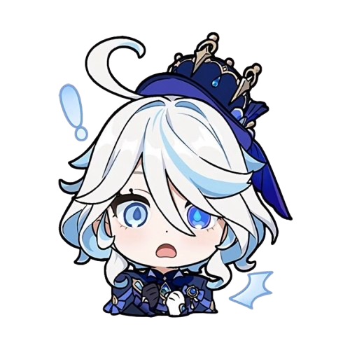
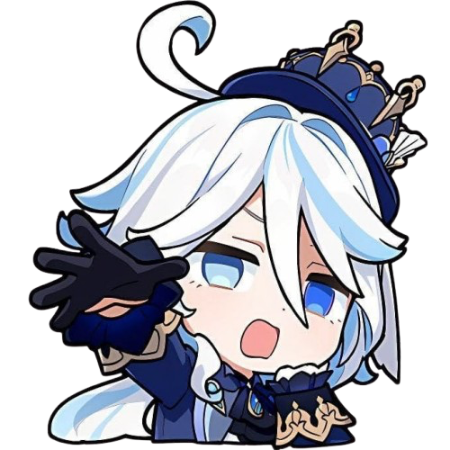
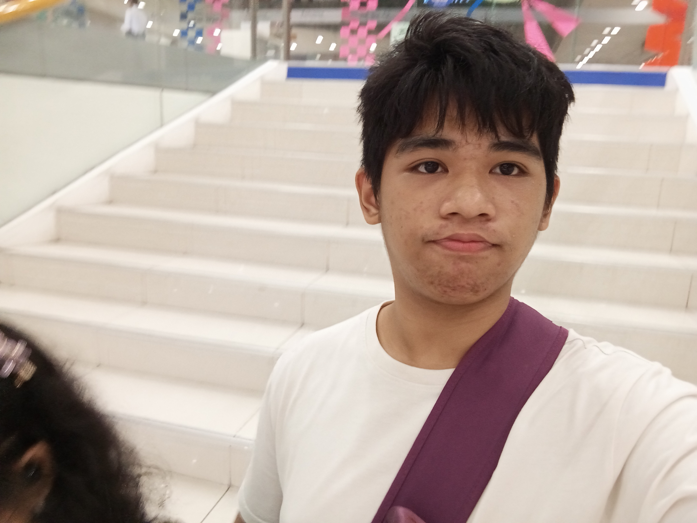
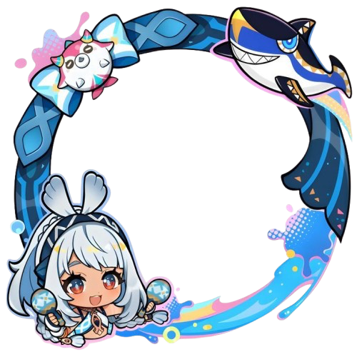
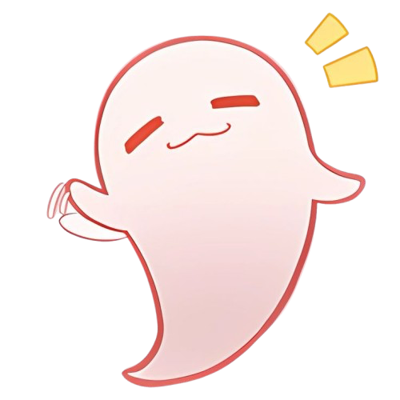
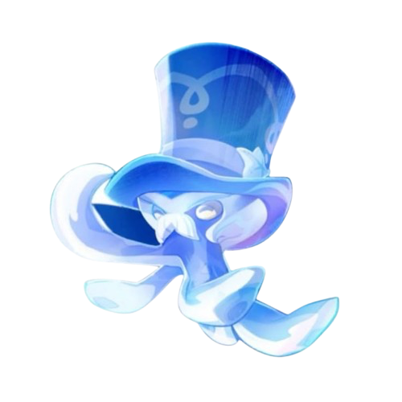
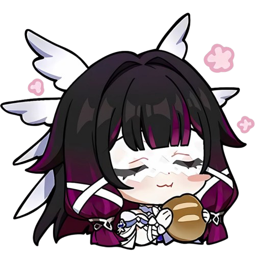
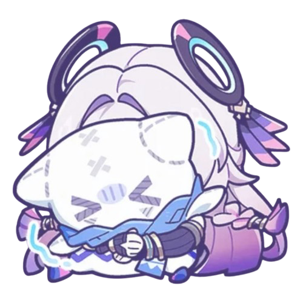

Sentino
THE GAMING IS LIFE😛
I am a first-year Computer Science student who enjoys games, music, movies, and creativity. My dream is to create my own game someday.😛
⬩ About Me
Hello! My name is Sentino M. Santillan. I am 18 years old and a first-year BS Computer Science student at Bicol University. Honestly, I still can't believe that I am already an adult! About me, I am a big guy who wears glasses, so I am pretty easy to notice. I also really love eating, hehehe! I enjoy watching movies, and some of my favorite movies are Steven Universe: The Movie,Mean Girls,Spider-Man: Into the Spider-Verse,Spider-Man: Across the Spider-Verse,and many more. I also love playing games, especially my favorite game, GENSHIN IMPACT. One thing that I really love and can't live without is listening to music. I love listening to music because it helps me calm down and makes my imagination more wider. The genre that I usually listen to is pop, especially songs from Olivia Rodrigo, Ariana Grande, Sabrina Carpenter, and Taylor Swift. My all-time favorite songs are "Into You" by Ariana Grande, "honeybee" by Olivia Rodrigo, and "Heather" by Conan Gray. Back in senior high school, I was an Electronic Products Assembly and Servicing (EPAS) student under the TVL track. Because of this, I learned a little about repairing household appliances and electronic devices. I am not really an expert, but I know some basic things about fixing appliances, and I find it interesting to learn how they work. Another thing about me is that I kind of like walking. Even though I don't usually go outside when I'm at home, I enjoy walking after school when I am going home. It helps me relax and clear my mind after a long day at school. Sometimes I just enjoy walking while listening to music.
My Hobbies
- Playing video games
- Watching movies
- Listening to music
⬩ My Path into Computing
I chose Computer Science because I want to create my own game someday. I hope I can learn how to develop games, make websites, and many more things about technology. I know that I still have a lot to learn, but I am excited to discover new things and improve my skills as I continue my journey in college.


⬩ Favorites and Skills
Favorite Movies and Shows
- Steven Universe🤩
- Young Sheldon🤓
- Modern Family🧑🧑🧒🧒
- Mean Girls🙄
- Spider-Man: Across the Spider-Verse🕸️
Favorite Artists
- Olivia Rodrigo
- Ariana Grande
- Sabrina Carpenter
- Taylor Swift
Favorite Songs
- Into You
- honeybee
- Heather
Skills I Want to Improve
- C Programming
- HTML and CSS
- Problem-solving

⬩ My Goals
- Finish my studies
- Improve my programming skills
- Find a good job
- Create my own game someday

⬩ Class Schedule
| Subject | Day | Time |
|---|---|---|
| CS 101 | Wednesday | 9:00 AM - 12:00 PM |
| Physics for Computer | Tuesday & Thursday | 1:00 PM - 2:30 PM |
| Math Analysis | Tuesday, Thursday & Friday | 2:30 PM - 4:00 PM |
⬩ My Reflection
As i making this web page,I told to myself how am I going to make this😭. So as a person grown on youtube I watched videos of it. By improving the first webpage I think to myself I need a theme. In the first webpage the theme is kindi olivia rodrigo "SOUR"(One of my favorite Album) and to the second theme I'm thinking "mean girls" but the thought of it its too girly so I decided to create Genshin theme. I think this is the best theme for me because I love playing genshin impact and I love the aesthetic of it. And gosh my imagination gone wild I'm thimkimg i want genshin pics on the sides, I want a background and I want my webpage to have a full of life (Proud of my imagination😎) but I don't know how to make it "sad". So a ton of research,watching and asking how to make one. Nonetheless I enjoyed making this webpage because I learned a lot of things about HTML and CSS. I also want to give respects to all the web designer/maker sorry for descriminating your work I know now it isn't easy. Lastly I want to say that I am proud of making this webpage.
⬩ Sources and Credits
- Photos and Pictures used:PINTEREST